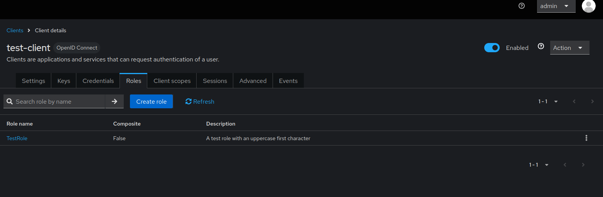
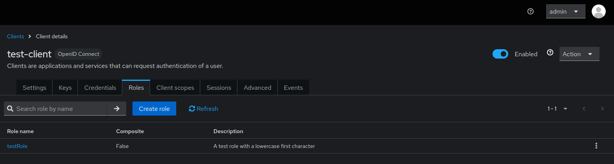

Understanding Client Roles Case Sensitivity
Keycloak treats client role names as case-sensitive, which is expected behavior in Keycloak's design. Understanding how case sensitivity works with client roles is essential for effective role management with keycloak-config-cli. This guide explains the behavior and provides best practices for consistent role management.
Related discussion: #940
Understanding Case Sensitivity Behavior
Keycloak's case-sensitive client role handling means that:
- "Admin" and "admin" are treated as different client roles
- Configuration files must use consistent capitalization for role updates
- Manual role creation in UI vs. config file requires exact case matching
- Role assignments succeed only with exact case matches
- Multiple roles with different cases can coexist
- HTTP 409 errors occur when trying to create roles that already exist with different case
- Error messages may require trace logging to identify specific conflicts
Example: Multiple Client Roles with Different Cases
Client: my-application
├── Roles:
│ ├── Admin (created manually in UI)
│ ├── admin (defined in config file)
│ └── ADMIN (another variation)
As shown above, Keycloak creates separate client roles for "Admin", "admin", and "ADMIN" - each is treated as a completely different role.
Understanding Case Sensitivity in Client Roles
How Keycloak Handles Client Role Names
Keycloak's client role system is strictly case-sensitive:
- Name Matching
- "Admin" ≠ "admin" ≠ "ADMIN"
- Each variation is a separate, distinct client role
-
No case-insensitive matching available
-
Client Association
- Roles are tied to specific clients
- Case sensitivity applies within each client's role namespace
-
Different clients can have roles with same name but different case
-
Role Operations
- Create, update, delete all use exact case matching
- Role lookup fails if case doesn't match
- Role assignments require exact name match
Expected Behavior Examples
Example 1: Creating Different Roles with Case Variations
When you create roles with different cases, Keycloak treats them as distinct roles:
First import with uppercase role:
{
"realm": "test-realm",
"enabled": true,
"clients": [
{
"clientId": "test-client",
"enabled": true,
"clientAuthenticatorType": "client-secret",
"secret": "test-client-secret",
"redirectUris": ["https://example.com/*"],
"webOrigins": ["https://example.com"],
"publicClient": false,
"protocol": "openid-connect"
}
],
"roles": {
"client": {
"test-client": [
{
"name": "TestRole",
"description": "A test role with an uppercase first character"
}
]
}
}
}
This creates the role "TestRole" successfully.

Second import with lowercase role:
{
"realm": "test-realm",
"enabled": true,
"clients": [
{
"clientId": "test-client",
"enabled": true,
"clientAuthenticatorType": "client-secret",
"secret": "test-client-secret",
"redirectUris": ["https://example.com/*"],
"webOrigins": ["https://example.com"],
"publicClient": false,
"protocol": "openid-connect"
}
],
"roles": {
"client": {
"test-client": [
{
"name": "testRole",
"description": "A test role with a lowercase first character"
}
]
}
}
}
This creates a separate role "testRole" - both roles now exist in Keycloak.

Example 2: Multiple Roles in Same Configuration
clients:
- clientId: my-application
roles:
- name: Admin
description: Administrator role
- name: admin
description: Different role with lowercase name
- name: ADMIN
description: Another distinct role
This creates three separate client roles, each with different permissions.
Example 3: Role Assignment with Exact Case Matching
The user gets assigned the "Admin" role, not "admin" or "ADMIN".
Behavior Details
HTTP 409 Conflict
- Cause: Attempting to create a role that already exists with different case
- When: Keycloak prevents creating duplicate roles (even with different case)
- Result: Import fails for that specific role, but other operations may continue
- Solution: Use exact case matching or delete the existing role first
Role Assignment Behavior
- Cause: Role reference case doesn't match actual role name
- When: Assigning roles to users or service accounts
- Result: Assignment fails if exact case match not found
- Solution: Ensure role references match exact case in Keycloak
Best Practices for Client Role Management
1. Establish Consistent Naming Conventions
Recommended Naming Patterns:
- lowercase-with-hyphens:
app-admin,read-only - UPPER_CASE_WITH_UNDERSCORES:
APP_ADMIN,READ_ONLY - CamelCase:
appAdmin,readOnly
Choose one convention and apply it consistently across all environments.
2. Audit Existing Roles Before Configuration Changes
Pre-Configuration Check Example
# Check for existing roles with case variations
#!/bin/bash
REALM="my-realm"
CLIENT="my-application"
# Export existing roles
kcadm.sh get clients -r $REALM -q clientId=$CLIENT | jq -r '.[0].id' > client_id.txt
CLIENT_ID=$(cat client_id.txt)
kcadm.sh get roles -r $REALM -c $CLIENT_ID | jq -r '.[].name' | sort -f > existing_roles.txt
echo "Existing client roles (case-insensitive sort):"
cat existing_roles.txt
3. Use Role Normalization
Configuration with Normalized Names
# Use consistent naming in configuration
clients:
- clientId: my-application
roles:
- name: app-admin
description: Administrator access
attributes:
original-name: "Admin" # Track original if needed
- name: app-user
description: Standard user access
4. Migration Strategy
Step 1: Identify Case Conflicts
# Migration script to identify conflicts
migration:
detect-case-conflicts: true
clients:
- clientId: my-application
existing-roles: ["Admin", "admin", "ADMIN"]
Step 2: Standardize Names
# Updated configuration with standardized names
clients:
- clientId: my-application
roles:
- name: app-admin # Standardized name
description: Administrator access
# Map from old names if needed
aliases: ["Admin", "admin", "ADMIN"]
Step 3: Update References
# Update all role references
users:
- username: john.doe
clientRoles:
my-application:
- app-admin # Updated from "Admin"
Configuration Examples
Complete Working Example
realm: my-realm
clients:
- clientId: my-application
name: My Application
roles:
# Standardized role names (lowercase with hyphens)
- name: app-admin
description: Full administrator access
attributes:
category: "administrative"
level: "full"
- name: app-user
description: Standard user access
attributes:
category: "standard"
level: "basic"
- name: read-only
description: Read-only access
attributes:
category: "limited"
level: "readonly"
users:
- username: admin.user
enabled: true
clientRoles:
my-application:
- app-admin
- username: regular.user
enabled: true
clientRoles:
my-application:
- app-user
- username: readonly.user
enabled: true
clientRoles:
my-application:
- read-only
Migration Example
# Before: Mixed case roles
clients:
- clientId: legacy-app
roles:
- name: Admin
- name: User
- name: ReadOnly
# After: Standardized roles
clients:
- clientId: legacy-app
roles:
- name: app-admin # From "Admin"
- name: app-user # From "User"
- name: read-only # From "ReadOnly"
Configuration Guide
Common Configuration Scenarios
Scenario 1: Managing Existing Roles with Different Cases
Situation: You have existing roles with inconsistent casing and want to standardize them.
Approach: 1. Identify all existing roles and their cases 2. Choose a standard naming convention 3. Update configurations to use the standard case 4. Delete old roles if no longer needed
Scenario 2: Preventing Case Inconsistencies
Situation: You want to ensure consistent role naming across your team.
Approach: 1. Document your naming convention 2. Use configuration validation 3. Implement team training and guidelines
Scenario 3: Working with Multiple Environments
Situation: You need to manage roles across dev, staging, and production environments.
Approach: 1. Use the same configuration files across environments 2. Apply consistent naming conventions 3. Test configurations in non-production first
Configuration Verification Steps
1. List Existing Roles
# List all client roles with exact case
kcadm.sh get roles -r my-realm -c <client-id> | jq -r '.[].name'
2. Validate Configuration Files
3. Enable Detailed Logging (if needed)
Configuration Management Best Practices
1. Establish Team Standards
Create Team Guidelines:
- Document preferred naming convention
- Include case sensitivity rules in team documentation
- Provide configuration templates and examples
- Review configuration changes in pull requests
2. Implement Configuration Validation
Pre-commit Hooks
#!/bin/bash
# Check for case inconsistencies in client roles
grep -r "name:" clients/ | sort -f | uniq -d -i
CI/CD Pipeline Validation
# GitHub Actions example
- name: Validate role naming consistency
run: |
python scripts/validate-role-names.py
3. Regular Configuration Audits
Monthly Role Management Reviews:
- Export all client roles from each environment
- Check for case variations and inconsistencies
- Identify opportunities for standardization
- Update configurations as needed
4. Team Education and Documentation
Knowledge Sharing:
- Include case sensitivity behavior in team training
- Provide naming convention guidelines
- Share configuration examples and templates
- Document role management procedures
Advanced Topics
Role Aliases and Mapping
For complex migrations, consider role mapping:
# Advanced: Role mapping for legacy systems
clients:
- clientId: enterprise-app
roles:
- name: system-administrator
description: System administrator role
aliases:
- "Admin" # Legacy name
- "admin" # Alternative case
- "ADMIN" # Another variation
attributes:
legacy-names: '["Admin", "admin", "ADMIN"]'
Programmatic Role Management
Custom Scripts for Role Normalization:
#!/usr/bin/env python3
import sys
import yaml
def normalize_role_names(config):
"""Normalize client role names to lowercase with hyphens"""
for client in config.get('clients', []):
if 'roles' in client:
for role in client['roles']:
old_name = role['name']
new_name = old_name.lower().replace('_', '-')
role['name'] = new_name
role['original_name'] = old_name
return config
if __name__ == "__main__":
with open(sys.argv[1], 'r') as f:
config = yaml.safe_load(f)
normalized = normalize_role_names(config)
with open(sys.argv[2], 'w') as f:
yaml.dump(normalized, f, default_flow_style=False)
Summary
Key Takeaways
- Client roles are case-sensitive by design - "Admin" ≠ "admin" ≠ "ADMIN"
- This is expected Keycloak behavior, not a bug in keycloak-config-cli
- Consistent naming conventions prevent confusion across environments
- Exact case matching is required for role updates and assignments
- Configuration validation helps maintain consistency
Best Practices Checklist
- Establish and document role naming convention
- Audit existing roles for case variations
- Use consistent case in all configuration files
- Ensure role references match exact case in Keycloak
- Validate configurations before applying
- Implement validation in CI/CD pipeline
- Train team on case sensitivity behavior
- Schedule regular configuration reviews
By understanding Keycloak's case-sensitive design and following these guidelines, you can effectively manage client roles with keycloak-config-cli across all environments.